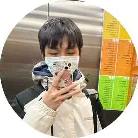
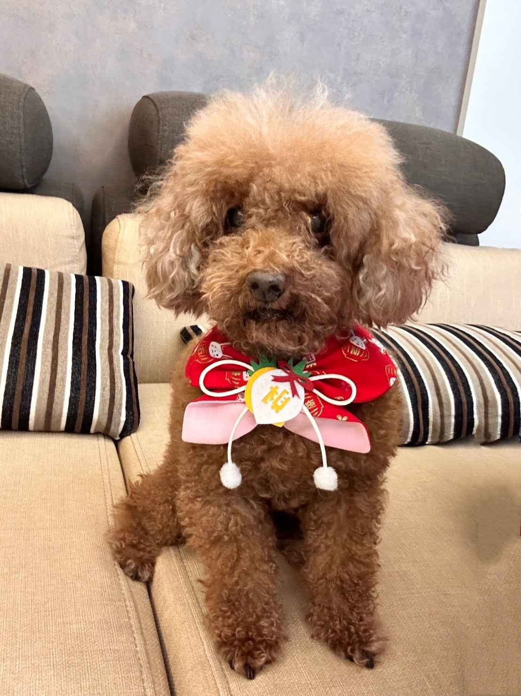

SCLemon
自我介紹
我是一個熱愛教學、熱愛物理、熱愛程設的學生。這個頁面是我自學程設所建立起的小小網頁，用途是純個人網頁，而設計理念在於展翅高飛。背景中有著許多自由飛翔的鳥兒代表著勇敢地放手與追逐夢想，而個人頭像的閃爍代表著期許自己能夠成為一道希望的光芒，引領自己以及周遭的人正向以及更好的未來。雖然不能保證自己未來能夠發光發熱，但就是有夢最美、希望相隨，只要願意相信自己辦得到，那就一定可以做到的！！這是我個人的理念，因為經歷過重重的挫折與努力，才有今天的我，所以我很相信這個道理。最後，還是得感謝幫助我的自己以及他人，我將會把這份愛傳下去並且幫助更多的人。
就讀學校
國立清華大學工程科學系
國立新竹高級中學
個人專長
Java SE 11
JavaScript
AppScript
國際認證
Java OCP Web Developer
Java OCP Developer
Java ITS Certificate
他人評價
對於我而言sc的教學算是讓我改變了許多解題的想法，以前我會對題目提出不同的解法，不
喜歡總是套用老師的標準解法，但在國中時我的數學老師對這種方式卻是非常不贊成，甚至
曾說我只是亂湊算式，我非常喜歡解數學題，總是自己額外買兩本講義來練習，而這也被我
的數學老師批評我是在刷題背題目，為此我感到非常的挫折，也開始懷疑自己的方式，對曾
經喜愛的數學越來越沒自信，我害怕在別人面前解題，甚至也無法專注在享受解題的過程
了，看到sc對於自己喜愛的物理能夠大膽的提出其他更好的方法，透徹所有的觀念來解決問
題，我才明白原來不遵照標準解法並不代表錯誤或是不認真，這其實是非常難能可貴的，也
讓我調整自己的心態再度拾起我最喜愛的數學。
而我認為sc的風格也跟其他書帳非常不一樣，sc的讀書模式和毅力讓我非常敬佩，最喜歡
的部分是讀書進度的安排，我會規劃自己的讀書進度，執行力也不算差，但有時還是會無法
如期執行，看到sc的限動有時會說他當天的時間安排，以及他曾說”進度就是要拿來超越
的”對我而言算是非常大的啟發，也激勵自己好好如期完成進度，甚至超越進度。（每天晚
上讀書的動力就是看他的限動(◐‿◑)
對我而言sc算是自己在學業上很大的心理支撐，即便自己是第一志願的特殊班，但我卻不否
認身旁有些人的學習態度我並不贊成，看到sc我會有一種原來還是有人在如此奮鬥的感覺，
sc為我帶來的不只是學習心態和讀書模式的整體改變，也讓我有種學伴的感覺，對我而言是
非常大的心理支柱。
從開始關注SC之後，我有很多時候都能被啟發。那個啟發除了自然或數學科等等，我對於
學習的想法也有所轉變。有人曾經說真正的強者或是一個領域的菁英，他們不是花時間在解
題，解題甚至可以是一個過程，他們的終極目標是優化解法，就好比那些頂尖軟體工程師，
他們對於程式語言已經熟透，再進一步便是要優化系統。我認爲這個學習模式是一個非常好
的鑽研學科內容的方式，而在許多學習分享帳之中，我能清楚在SC所分享的內容中看見並
且學習。
其次在關注SC之後，我整體的讀書效率以及時間安排有了最佳化的編排，SC在clubhouse
對於複習和預習的學習法有自己一套見解，而巧的那樣的方式其實套用在我身上也是合適
的。
再者我堅信證明自己學成了一套內容最好的方式就是協助他人、帶領他人。這並不是一個好
為人師的做法，與我同年的學生碰到的問題那我也有極大機會遇上，設想我較早學會，我便
能夠透過教其他人來驗證我自己吸收學識的效率及品質。這一點我在SC的分享中也時常能
夠看到，包含SC之前分享他協助出題國中的考卷，或是時常提供自編題目供閱聽人解題，
我想這是一個很好的學習辦法也是一個難得的機會。我會有這麼樣的共鳴是因為本人在英文
（英檢中高、多益金證)以及國文作文（市賽第一）略有成就，在這兩方面我便能夠提供其他
人協助，包含協助批閱作文、英文學習法等等...
最後我歸結出的就是SC帶給群眾的已經超脫原本常規讀書帳的內容了，更多的是需要現在
新青年去體會的學習方式及內容。SC之前提過原本PR低，透過奮力不懈的努力（學弟我看
到的）到如今能夠拿到APX銅牌等令人佩服的好成果，我想這是一個極為正面的例子。我
相信SC在各個職場、任何場域都是能夠發光璀璨的人；同時，出版物理教材也是延續SC在
物理（或甚至是各科）的解題方式以及課程內容的獨特見解的最好方式！
我覺得這個帳號跟其他帳號都很不同，同時也因為不會和其他帳號重複性太高，所以我才會
選擇追蹤。高一的時候我還滿不喜歡物理的，而且同時也因為學的不夠深，基本上每次的內
容我都沒有參與，但我還是看完了，漸漸的，也慢慢對物理產生興趣，對各種不一樣的解法
產生好奇，而且你願意花時間幫助大家解題，提供大家各種升學資訊，對我幫助很大。前陣
子看到限動上說有人批評這個帳號不像讀書帳時，覺得感觸滿多的，也希望這個帳號不要改
變，正因為這個帳號的不同，所以我才會願意花時間看，希望你能一直堅持下去。
在無意間發現了這支帳號,感覺與其他的帳號不一樣，很有特色，筆記也都很實用呢！
有粉絲去問問題也會很耐心的去解，且無償分享那麼多的筆記，真是太感謝了😆 最
近分享的貼文也都很實用，讀書動力之類的……還有有關二階面試的相關資訊，都是
可以令人收穫很多的呢！ 真希望我有一天也能成為想你一樣的人啊！ 希望你能把這
個帳號繼續辦下去😃，SC 是我最喜歡的版主呢！ 真的很喜歡😍😍😍 願你朝著你想要
的方向前進，並過得愈來愈好😁
淺水很久的粉絲默默浮上來一下🤣
記得剛追蹤你的時候是2019的夏天
（看過穿恐龍裝的直播哈哈哈哈哈）剛好也是我要開始準備會考的時候，班上很多人那
時的目標都是竹中竹女，有時候我還會拿你帳號去跟他們說：欸你看 竹中的學長 超級
認真的
後來換了幾個帳號，但是要追蹤學術性質帳號的時候都不會忘記追你、乙烯、木瓜…幾
個很純粹的元老們🤣
也很常被你猛力的雞湯爆擊（？
記得你之前分享過一段話：每天醒來的時候就把自己歸零，然後認真去過今天的生活，
把每天的自己衝到PR99 然後隔天醒來雖然又會歸零，但是這樣一定能把自己變得更
強。
（有點忘記原話，大概是這樣的意思 希望我沒記錯🤣）
後來也看你一路很認真的準備備審的資料，有時候點開你的動態就會覺得，天啊世界上
怎麼會有這麼認真的人，雖然大我兩歲，但我不覺得我兩年後能成為跟你一樣厲害的
人，每次都會被你激勵到哈哈哈哈🔥
總之，從我是準會考生追蹤你一直到現在，馬上又換我變成準學測生了（哭啊時間都去
哪兒了）很高興你又回來了，希望以後還能看到你在這裡常常出現！！
嗨！sc～新年快樂！身為一名從開始追蹤你到現在仍然默默潛水到現在的粉絲，看到最
近大家瘋狂私訊你，所以這次就想趁著這次機會鼓起勇氣偷偷浮出水面和你說說話！
其實我也記不清自己是怎麼發現這隻帳號的，但好像是國三時開始追蹤你的，現在竟然
不知不覺變成準學測生了🥲記得當我點開這隻帳號時就被吸引了，因為我第一次看到有
讀書帳的版主這麼認真的回答每個粉絲的私訊並幫大家解題，不會像有些讀書帳版主直
接已讀粉絲訊息甚至連個愛心也沒按。雖然當時國中的我還看不懂你po的物理筆記及
解題方法，但我心想當我高二時一定要好好的去看你po的筆記和解題方法（因為當時
你高二），可是後來你暫時離開後貼文都典藏了😭那時每天看著你的限時動態感覺你真
的真的很熱愛物理～也會讓人有想一起奮鬥的感覺。
等到升上高二後，雖然有補物理，但理科不太好的我還是覺得選修物理好難，可是因為
未來想讀的科系是自然組科系，所以就只能咬緊牙關繼續撐下去了。之前曾經有想私訊
問你問題，也因為怕你覺得我問的問題很蠢所以就放棄了。
對了，我追蹤你的本帳也有一段時間了！每天打開ig都會看到你限時上滿滿的字，但無
論是讀帳還是本帳的限時我都有一個字一個字慢慢看完喔～雖然字真的不少，但你說的
話真的都很有道理，你的大學生活也很多采多姿呢～
Sorry～好像不小心打太多了，但我相信你不會介意的🤣最後我想說的是很開心你回來
了！我真的很喜歡你的真誠不做作。希望你新的一年事事順心，我們一起努力！也希望
我可以一次上岸，不要變成重考生啊🥲
幾乎每次都是在半夜準備要睡覺的時候跟到你的直播，雖然很清楚要趕快去睡，但是只
跟了一次就會有第二次。聽你講你的小故事、如何對待他人、積極面對所遇到的事情、
超前進度讀書、在考試卷上畫畫、如何找到自己未來的職業與熱忱，還有不要在意他人
的眼光，做自己就好等等的讓我覺得學到很多，也覺得很值得。很開心可以有機會認識
你的帳號與人，我大概追蹤1年多了，今後我還是會繼續看直播與你發出的限動與貼
文。但我不太喜歡在很多人的場合發言，所以不常在直播留言，不知道你對我有沒有印
象？
聽那些故事真的很歡樂也很有趣，有時候會很想放聲大笑，但是太晚了
還記得有一次你說你每天只睡四個小時，我覺得超神的(我睡六七個小時還是覺得很累)
我也是前幾年就開始追蹤你的！
那時候國三在試著超修物化
意外看到這個帳號就完全被吸引住了
但我一直都沒出現過就默默的看著你的限動跟貼文
你的限動數量跟字數都令人難忘
但我幾乎每次都有一行一行的看完
看到你最近在回覆大家的訊息時我就在猶豫我到底要不要私訊
但還是很不要臉的傳了！
如今我也高二了
看著你向明確的目標努力真的很羨慕
同時也給了我很多讀書的動力！
雖然現在我還沒找到之後的目標
但我也是從準會考生變準學測生的
：/ 哭啊我要完蛋了嗎
總之我真的很高興你回歸了！
希望之後也可以一直看到你
新年快樂！
查看更多：點擊連結
永恆摯愛

林鐵蛋（蛋蛋）
2013/03/28~2023/05/20
聯絡方式
電子信箱：blc0000421@gmail.com
FaceBook: 林英豪
Instagram: sccj_1013
Github: sc1314520
聯絡時間：15:30pm ~ 23:59pm